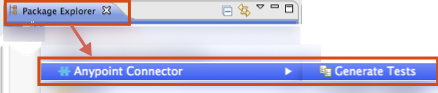

Developing DevKit Connector Tests
While DevKit does not enforce writing tests, you should develop unit and functional tests for your connector as part of the development process. A connector should not be considered production-ready without a proper test suite.
While testing strategy may vary extensively based on your specific needs, this document introduces the basics of what Mule and DevKit make available to support connector testing approaches.
Prerequisites
This document assumes that you:
-
Installed the Anypoint Connector DevKit Plugin as described in Creating an Anypoint Connector Project
-
Are familiar with Anypoint Studio
-
Are familiar with Maven build manager for Java
-
Are familiar with JUnit
Code Areas to Test
Incorporate these kind of tests in your test suite:
-
Input data validation:
-
Run consistency checks on the inputs if your connector accepts user parameters or parameters from another application. Parameters taken by cloud services may be optional, while others must follow to certain rules.
-
Implement unit tests that assign valid or invalid inputs to each of your connector’s methods, and check that the input validation responds accordingly.
-
-
API Interaction:
-
Handle connection or communication errors if your connector communicates over the Internet with a remote service, typically by either retrying or by throwing a clear exception.
-
Test error handling regardless of the type of error handling strategy you choose.
-
Mock up testing a Web service.
-
Point the connector to your test endpoint instead of a production target so that you can more easily reproduce error conditions like timeouts or connection loss.
-
-
Mule ESB Integration:
-
Cover all operations in your connector’s test suite—test every operation and parameter at least once.
-
Pass in and receive all reasonable inputs and outputs for each operation.
-
Pay special attention to covering complex data types passed into and received from operations in XML, since these can be tricky.
-
Test the use of default and optional parameter values in the XML to make sure they behave as expected.
-
Test cases where you expect the connector to raise exceptions.
-
-
Anypoint Studio Integration:
-
Test your connector’s appearance and usability in Studio.
-
Include the behavior and prompts in the properties dialog, tooltips generated from your Javadoc comments, etc. The only way to test this is to manually use the connector in Studio.
-
Generate Tests Scaffold
A test scaffold is a set of Java files that appear under src/test/java after you use Anypoint Studio to generate tests. Studio generates these files:
Test Runners - Running Sets of Test Cases
-
Regression test suite file - You can use this code to uncover new bugs by comparing the previous state of the connector to the current. If this is the first run, it finds new bugs.
-
Smoke test suite file - Reveals simple issues such as "does this feature run?" that you can use to ensure that the basic behavior of your connector functions as expected.
Regression and Sanity Test Levels
-
Test case automation Java files - Scaffolds tests for each method in your connector.
-
Optional test data files - Provides test data for your connector.
To Create a Test Case Scaffold
-
Right-click your project in Package Explorer and click Anypoint Connector > Generate Tests:
 -
Click the methods that you want to create a test scaffold for, or click Select All. The wizard displays choices from test-ready methods in your application. If you do not see a desired method, be sure you annotated the function properly, for example, placed
@Processorabove your method.
-
Click Generate Test Case Scaffolding to create the scaffold files.
-
Click additional choices if you want Studio to create test data that you can use to test your connector:
-
Generate Functional Test Data Files
-
Generate Interop Test Data Files
-
-
Click Finish. Studio creates files that appear in Package Explorer under
src/test/java. -
Add your code to the scaffolded tests. To run your tests, see Running Generated Tests.
Example Scaffold File
Test example:
package org.mule.modules.automation.testcases;
import org.junit.After;
import org.junit.Test;
import org.junit.experimental.categories.Category;
public class EnterTimeOffTestCases
extends myTestFunctionalParent
{
public void setup() {
//TODO: Add setup required to run test or simply remove method
}
@After
public void tearDown() {
//TODO: Add code to reset sandbox state to the one before the test was run or simply remove method
}
@Category({
RegressionTests.class,
SmokeTests.class
})
@Test
public void testEnterTimeOff(){
//getConnector() gives back an instance of the current connector
//Object result = getConnector().connectorMethod();
}
}You should replace the "TODO" statements with code for your tests. This scaffold does not execute any tests and produces no errors or failed assertions at all.
Testing Procedure
DevKit testing procedure provides the following features.
Objectives
-
Automation test suite integrated to the connector.
-
Real sandbox and Mule server is used when running the tests.
-
Automation test suite maintenance should be minimal.
-
Outdated automation suites don’t affect development.
Test Creation Criteria
-
Launches and completes a Mule instance for each test ensuring isolation from the rest of the suite.
-
`setUp() method creates the test fixture prior to running the actual test. Entities are created specifically for testing an operation.
-
Tests should be flexible enough to support all possible entities and amount of them (if applicable) and should only have to be updated if business logic changes happen on the operation or the operation itself is modified (for example, a signature change).
-
Tests should clean up after themselves. Sandbox is left in the state prior to running the test.
-
Tests should only test one thing at a time.
Coverage Categories
-
Smoke suite tests whether preconditions are met for a Regression run.
-
Regression suite includes at least one test case for each operation.
-
Write functional tests using the connector testing framework.
Suite Implementation
Test Development Environment Set Up
After building the connector add target/generated-sources/mule to the project build path, it might be necessary to add additional generated sources to the build path depending on the connector (such as target/generated-sources/cxf).
Also, if a connector is Standard, remember to add a muleLicenseKey.lic file to the src/test/resources folder and to remove it prior to committing your changes.
Packages and Files
-
org.mule.modules.<connector-project>.automation- Contains the <Connector>TestParent and the SmokeTests and RegressionTests categories interfaces. -
org.mule.modules.<connector-project>.automation.testrunners- Contains the runners (RegressionTestSuiteandSmokeTestSuite). -
org.mule.modules.<connector-project>.automation.testcases- Contains the functional test cases exclusively. -
<connector-project>/src/test/resources- Contains credentials:-
automation-credentials.properties
-
Next Steps
If you are developing individual unit tests while adding operations to your connector, you should go back to the development process. Build your connector project with Maven; if any of your tests fail, then your Maven build process fails.
After you complete your test suite, you can generate complete documentation and samples for your connector.